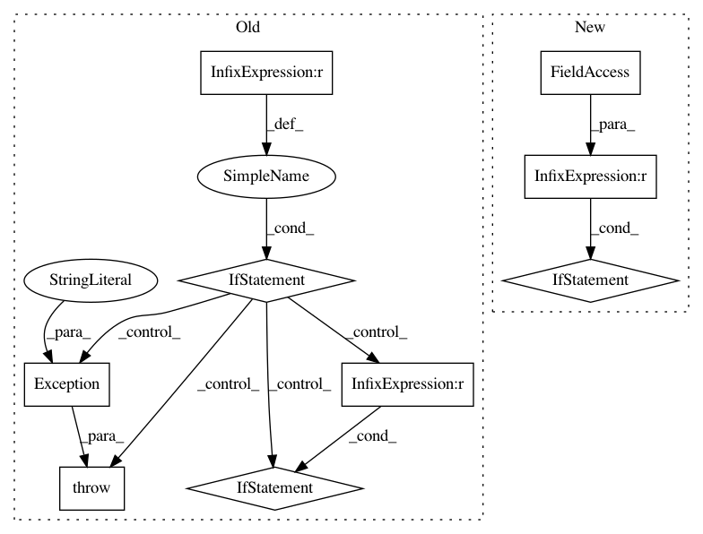

01b4ec3f531e07b8c4a32a13288c963ad8b4b843,server/website/website/db/myrocks/parser.py,MyRocksParser,convert_dbms_metrics,#MyRocksParser#Any#Any#Any#,148
Before Change
raise Exception("Unknown metric type for {}: {}".format(
name, metadata.metric_type))
if target_objective is not None and self.target_metric(target_objective) not in metric_data:
raise Exception("Cannot find objective function")
if target_objective is not None:
metric_data[target_objective] = metric_data[self.target_metric(target_objective)]
else:
// default
metric_data["throughput_txn_per_sec"] = \
metric_data[self.target_metric(target_objective)]
return metric_data
def convert_dbms_knobs(self, knobs):
knob_data = {}
After Change
if metadata.vartype == VarType.INTEGER:
converted = float(self.convert_integer(value, metadata))
elif metadata.vartype == VarType.REAL:
converted = self.convert_real(value, metadata)
else:
raise ValueError(
In pattern: SUPERPATTERN
Frequency: 4
Non-data size: 9
Instances
Project Name: cmu-db/ottertune
Commit Name: 01b4ec3f531e07b8c4a32a13288c963ad8b4b843
Time: 2019-10-14
Author: dvanaken@cs.cmu.edu
File Name: server/website/website/db/myrocks/parser.py
Class Name: MyRocksParser
Method Name: convert_dbms_metrics
Project Name: tensorlayer/tensorlayer
Commit Name: 6f539ad2324ddccc18b6ac39e4a2f4aeb12173a2
Time: 2018-04-17
Author: DEKHTIARJonathan@users.noreply.github.com
File Name: tests/test_layers_spatial_transformer.py
Class Name:
Method Name:
Project Name: cmu-db/ottertune
Commit Name: 01b4ec3f531e07b8c4a32a13288c963ad8b4b843
Time: 2019-10-14
Author: dvanaken@cs.cmu.edu
File Name: server/website/website/db/myrocks/parser.py
Class Name: MyRocksParser
Method Name: convert_dbms_metrics
Project Name: cmu-db/ottertune
Commit Name: 01b4ec3f531e07b8c4a32a13288c963ad8b4b843
Time: 2019-10-14
Author: dvanaken@cs.cmu.edu
File Name: server/website/website/db/base/parser.py
Class Name: BaseParser
Method Name: convert_dbms_metrics
Project Name: tensorlayer/tensorlayer
Commit Name: 6f539ad2324ddccc18b6ac39e4a2f4aeb12173a2
Time: 2018-04-17
Author: DEKHTIARJonathan@users.noreply.github.com
File Name: tests/test_layers_normalization.py
Class Name:
Method Name: